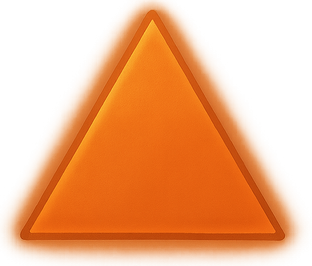

Maîtrise de la lame cinétique
 Passif
Passif
L'Impérial possède une connaissance unique lui permettant d'utiliser une fusion d'artillerie haute puissance et d'armes de mêlée appelée lame cinétique. Cependant, pour l'utiliser, il doit lui fournir du carburant pour alimenter ses attaques les plus dévastatrices. Ce carburant est appelé une cartouche, et dans des circonstances normales, toute utilisation d'une action cinétique consommera une cartouche correspondant au type de l'action qui a été utilisé. Il existe actuellement cinq types de cartouches connus : les cartouches d'Assaut pour l’Assaut cinétique, les cartouches de Feu, de Gel et de Foudre pour les actions cinétiques élémentaires, et enfin les cartouches d'accélération pour l'Accélération cinétique. La cartouche doit être remplacée avec une action bonus avant qu'une action cinétique puisse être utilisée à nouveau. Les cartouches peuvent être achetées dans les magasins ou synthétisées en combinant des demi-cartouches du même type laissées par certaines capacités que l'Impérial apprendra plus tard. Combiner deux demi-cartouches en une cartouche entière nécessite 5 minutes en dehors du combat.
Assaut cinétique
 3 PA (Action Complexe)
3 PA (Action Complexe)
Au premier niveau, les Impériaux sont capables d'utiliser des cartouches de carburant d’Assaut afin de déchaîner l’Assaut cinétique. En tant qu'action complexe, effectuez une attaque de mêlée pour toucher un ennemi avec la Lame Cinétique. En cas de réussite, l’Assaut cinétique inflige 4d8 + modificateur de Force de dégâts tranchants. Une cartouche d’Assaut est utilisée, et la lame cinétique surchauffe pendant 6 rounds (36 secondes). L’Impérial ne peut pas utiliser une autre action cinétique tant qu'elle est en surchauffe. La lame doit être rechargée avec une autre cartouche en tant qu'action bonus avant d'utiliser à nouveau une action cinétique.
 Tranchant acéré
Passif
Tranchant acéré
Passif
Chaque fois que l'Impérial touche une cible en attaquant directement avec son arme équipée, la durée de Surchauffe est réduite de 6 secondes supplémentaires (1 round).
Garde lourde
 1 PA (Réaction)
1 PA (Réaction)
Lorsqu'un allié est ciblé par une attaque, l'Impérial peut voler à son secours en tant que réaction. L'Impérial cible un allié dans un rayon de 3 mètres et échange sa place avec lui, encaissant ainsi l'attaque pour l'allié désigné.
 Serment impérial
Serment impérial
 Spécialisation
Spécialisation
Au troisième niveau, les Impériaux choisissent un Serment à suivre. Ceux qui prêtent Serment de Destruction déchaînent une force terrifiante qui piétine sans effort les ennemis, tandis que les Impériaux qui choisissent de prêter Serment de Protection utilisent la chaleur naturelle générée par leur arme pour se fortifier et défendre les alliés. Ces Serments leur accordent des aptitudes supplémentaires à mesure qu'ils montent en niveau
Tranchant massif
 2 PA (Action)
2 PA (Action)
La maîtrise de l'Impérial sur les aspects physiques de sa lame cinétique augmente. Effectuez une attaque avec une lame cinétique. Gagnez 1d4 d'Offense sur l'attaque, et jusqu'à 2 créatures dans un rayon de 3 mètres de la première cible subissent 1d8 + modificateur de Force de dégâts de force.
Lame du dragon
1 PA (Action Bonus)
Après avoir émis un Ordre, le Souverain peut utiliser une action combo pour adopter une posture de combat avec son arme de choix. Tant qu'il est dans cette posture, le Souverain peut attaquer une fois avec son arme équipée en tant qu'action libre. Cette attaque inflige des dégâts supplémentaires de force égaux à 1d6 + modificateur de Charisme.
Fortitude du chevalier
Passif
Les Impériaux ont l'avantage aux jets de sauvegarde contre la peur.
Feu/Gel/Foudre cinétique
3 PA (Action Complexe)
Au huitième niveau, les Impériaux ont appris à utiliser des cartouches plus complexes pour déchaîner des actions cinétiques élémentaires. En tant qu'action complexe, effectuez une attaque de mêlée pour toucher un ennemi avec une lame cinétique. En cas de réussite, l'ennemi subit 4d12 + modificateur de force de dégâts de feu, de glace ou de foudre, selon la cartouche utilisée. La cartouche est consommée après utilisation, et la lame doit être rechargée avec une autre cartouche avant d'utiliser à nouveau une action cinétique. Après l'utilisation de Feu, Gel, ou Foudre cinétique, la lame est en surchauffe pendant 8 rounds (48 secondes).
Tranchant sanguinaire
 1 PA (Action Combo)
1 PA (Action Combo)
Lors de l'activation de Tranchant acéré, l'Impérial peut absorber le sang tiré par sa lame affûtée pour récupérer sa propre vitalité. L'Impérial peut utiliser une action combo pour récupérer des points de vie égaux à 1d8 + modificateur de Constitution lorsque Tranchant acéré réduit le temps de recharge de la surchauffe.
Absorbeur
Passif
Lorsque l'Impérial réussit à toucher avec une action cinétique, la cartouche n'est consommée qu'à moitié ; deux demi-cartouches peuvent être combinées en utilisant cinq minutes en dehors d’un combat en une cartouche entière, pouvant être utilisée pour des actions cinétiques. La cartouche entière est toujours consommée en cas de manqué ou d'effleurement.
Mécanique avancée
Passif
Au quatorzième niveau, l'Impérial a passé suffisamment de temps à entretenir et à améliorer sa lame cinétique pour devenir familier avec la mécanique à petite échelle. L'Impérial a l'avantage sur tous les jets visant à utiliser un kit de bricolage pour construire ou réparer de petites machines. Il peut également combiner des demi-cartouches une fois par tour en tant qu'action libre.
 Tranchant impulsif
2 PA (Action)
Tranchant impulsif
2 PA (Action)
En tirant la puissance résiduelle d'une action cinétique dans leur lame, l'Impérial peut utiliser une action pour effectuer une attaque de mêlée avec sa lame cinétique. Si l'Impérial a utilisé une action cinétique dans la dernière minute, Tranchant impulsif inflige 2d8 dégâts supplémentaires de l'élément de la dernière action cinétique, après quoi Tranchant impulsif ne peut plus être utilisé jusqu'à ce que l'Impérial utilise une autre action cinétique.
Tranchant chargé
1 PA (Action Combo)
L'Impérial a appris à préparer la cartouche avant de déclencher une action cinétique pour augmenter sa puissance destructrice. Si l'Impérial a activé une compétence de Tranchant au moins 3 fois depuis le début de son dernier tour, il peut utiliser une action combo pour amorcer une seule cartouche ; vous pouvez changer la cartouche dans la lame cinétique lorsque vous utilisez Tranchant chargé. Jusqu'à la fin du prochain tour de l'Impérial, toute action cinétique utilisant cette cartouche lance deux fois les dés pour les dégâts. Si le prochain tour de l'Impérial se termine sans utiliser la cartouche, elle est consommée à moitié.
Accélération cinétique
3 PA (Action Complexe)
Au dix-neuvième niveau, l'Impérial a appris à utiliser la cartouche de carburant la plus instable sans se blesser ni endommager sa lame cinétique. En tant qu'action complexe, effectuez une attaque de mêlée pour toucher un ennemi avec une lame cinétique. En cas de réussite, l’Accélération cinétique inflige 8d10 + modificateur de force de dégâts tranchants, ignorant la résistance aux dégâts tranchants. Une cartouche d'Accélération est consommée, et la lame est en surchauffe pendant 10 rounds.
Amorçage
2 PA (Action)
Ayant pleinement maîtrisé l'utilisation de leur arme signature, les Impériaux apprennent à se pousser eux-mêmes et leur équipement au-delà des limites normales. En utilisant une action pour retirer le limiteur de l'arme, la lame cinétique ne surchauffera plus pendant 3 rounds, et, après la fin de l’Amorçage, l'arme ne peut plus servir à l'Amorçage sans subir de graves dommages. Par conséquent, l'Impérial doit passer au moins vingt minutes lors d'un repos long ou court avec son kit de bricolage pour entretenir la lame cinétique afin de pouvoir utiliser l’Amorçage avec cette arme ; s'il n'a pas de kit de bricolage, il doit faire entretenir l'arme dans un magasin qui propose ce service ou être incapable d'utiliser l’Amorçage avec cette arme.
 Détails de la classe
Détails de la classe
 Points de vie : 1d10 + modificateur de Constitution par niveau d’Impérial
Points de vie : 1d10 + modificateur de Constitution par niveau d’Impérial Dés de vie : 1d10 par niveau d'Impérial
Dés de vie : 1d10 par niveau d'Impérial DD des jets de sauvegarde : 8 + bonus de maîtrise + modificateur de Force
DD des jets de sauvegarde : 8 + bonus de maîtrise + modificateur de Force Maîtrises : Lames cinétiques ; Armures lourdes ; Outils de bricoleur
Maîtrises : Lames cinétiques ; Armures lourdes ; Outils de bricoleur Jets de sauvegarde : Force, Constitution
Jets de sauvegarde : Force, Constitution Compétences : Choisissez 2 parmi Athlétisme, Histoire, Investigation, Médecine, Intuition, Intimidation, Persuasion, Tromperie ou Survie
Compétences : Choisissez 2 parmi Athlétisme, Histoire, Investigation, Médecine, Intuition, Intimidation, Persuasion, Tromperie ou Survie Équipement de départ : Une lame cinétique, une armure lourde, une trousse de bricoleur, 5 cartouches d'Assaut cinétique, un sac d'explorateur
Équipement de départ : Une lame cinétique, une armure lourde, une trousse de bricoleur, 5 cartouches d'Assaut cinétique, un sac d'explorateur